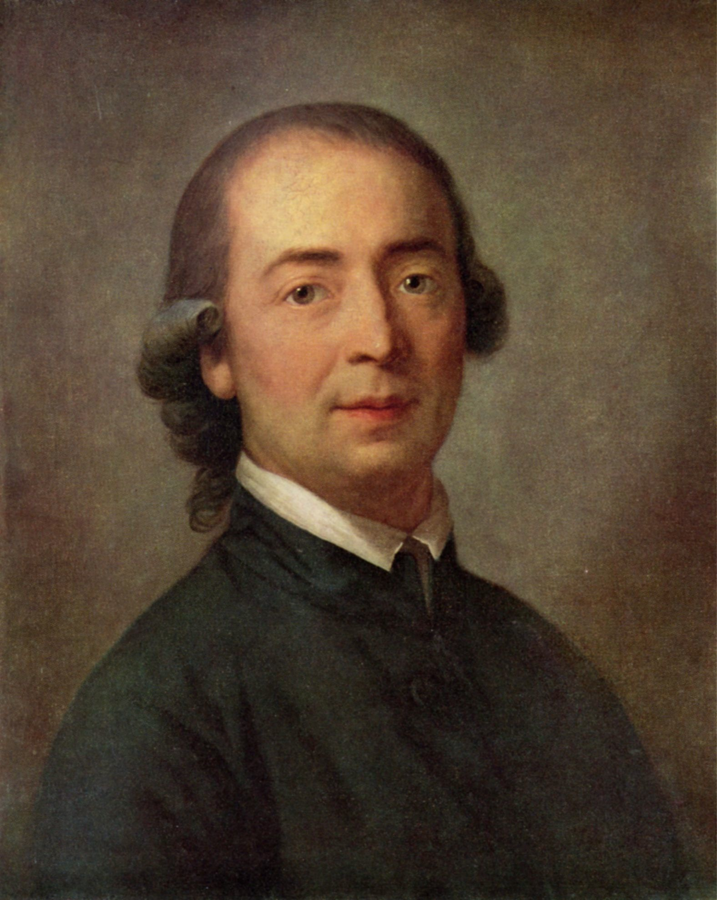
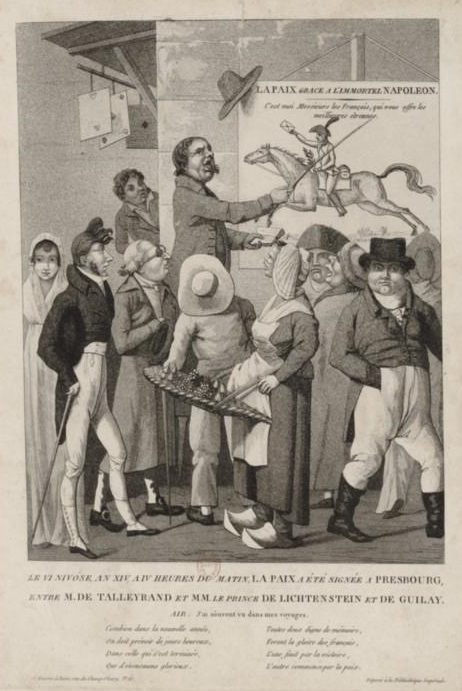
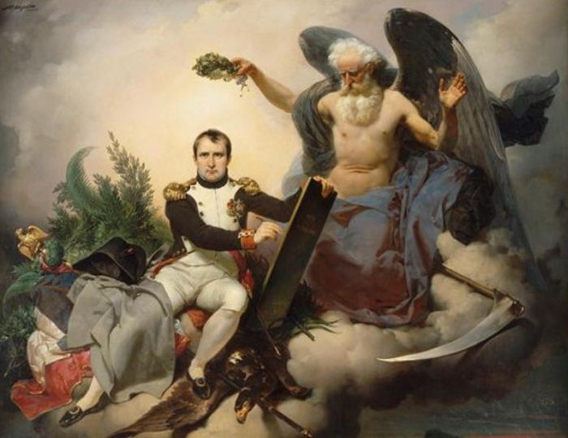

바이에른의 배신 (5) - 빛은 프랑스로부터
게시: 2024-09-09T06:30:55+09:00
어떻게 보면 몽겔라스의 친프랑스 정책은 구한말 때 청나라와 러시아로부터 조선을 지키기 위해서는 일본을 끌어들여야 한다고 믿었던 김옥균 등의 개화파의 생각보다 오히려 한 발 더 나간 것일 수도 있었습니다. 최소한 당시 조선에게 있어 청나라나 러시아나 일본이나 모두 외국어를 쓰는 이민족에 불과했습니다. 그러나 오스트리와 프로이센은 최소한 바이에른과 같은 독일어로 말하고 같은 음식을 먹고 비슷한 사회적 관습을 가진 게르만 형제국이었고, 프랑스는 과거 샤를마뉴 대제 때부터 게르만족과 대치하며 게르만족끼리 서로 싸우도록 부추긴 적대적 이민족 국가였습니다. 형제 국가들을 격파하려는 이민족 국가와 굴욕적인 동맹을 맺는 것은 독일 민족에 대한 배신 행위로 여겨졌을 것 같습니다. 하지만 막시밀리안 1세가 즉위하던 1799년 당시 유럽에 민족주의라는 것이 존재하기는 했을까요? 최근 잡상 포스팅( https://nasica1.tistory.com/790 참조)에서 당시 전쟁이 우리 눈에 낭만적으로 보이는 이유가 실은 엄격한 신분제 계급에 의한 차별 때문이었으며, 당시 프로이센군의 융커(junker, 토지 기반의 귀족) 출신 장교는 농민 출신인 자국군 병사보다는 적군인 프랑스군의 귀족 출신 장교와 더 진한 동질감을 느끼고 있었다고 설명한 바 있었지요. 그런데 18세기 후반부터 슬슬 민족주의라는 것이 나타나기 시작하긴 했습니다. 그런 움직임은 프랑스 계몽주의에서 시작되었다고 보는 것이 일반적이지만, 실은 그냥 세상의 중심이 자기들이라고 생각하던 프랑스나 고립된 섬나라 영국보다는 서쪽의 프랑스인들과 동쪽의 슬라브인, 바다로부터 들어오는 영국인들과 자주 접하던 독일에서 특히 강하게 나타났습니다. 더군다나 영국이나 프랑스와는 달리 독일은 같은 독일어를 쓰는 사람들이 하나의 국가를 이루지 못하고 자잘한 작은 나라로 분열되어 있었기 때문에 그런 민족주의가 더욱 호소력을 가지고 있었습니다. 특히 18세기 후반 활약했던 프로이센의 철학자 헤르더(Johann Gottfried Herder)가 언어와 문학을 기반으로 한 독일 낭만주의를 주창하면서 지식인들 사이에서 그런 독일 민족주의는 미미하지만 꽤 꾸준히 퍼져나가고 있었습니다.

(헤르더(Johann Gottfried Herder)는 1744년 생으로서 동프로이센의 가난한 평민 교사의 아들로 태어났습니다. 그는 정규 교육 없이 아버지의 성경과 찬송가책으로 자습을 하다가 17세 때 쾨니히스베르크(Königsberg, 오늘날의 러시아 칼리닌그라드) 대학에 가서 칸트가 가르치는 수업을 듣기도 했습니다. 그는 프랑스 계몽주의의 영향을 받아 독일 낭만주의의 창시자가 되었으며, 말년에는 프랑스 대혁명을 공개 지지하여 많은 동료들과 사이가 벌어졌습니다. 그는 53세로 일찍 사망하기 1년 전인 1802년 귀족 작위를 받고 이름에 von을 붙이게 되었는데, 그에게 귀족 작위를 내린 것이 바로 바이에른의 막시밀리안 1세였습니다. 독일 민족주의의 창시자 중 하나라고 할 수 있는 그가 친프랑스 정책으로 독일 민족주의자들로부터 욕을 먹은 막시밀리안 1세로부터 작위를 받다니 참 아이러니컬한 일입니다.) 몽겔라스의 다소 굴욕적이기까지 한 친프랑스 정책은 바이에른 내에서 많은 조소와 비판을 낳았습니다. 이제 막 퍼져나가기 시작하던 독일 민족주의에 정면으로 대치되는 정책이었으니까요. 하지만 몽겔라스는 전혀 흔들리지 않았습니다. 몽겔라스는 오로지 바이에른의 국익 외에는 아무것도 고려하지 않는 현실적 정치가였습니다. 그는 독일 민족주의 운운하는 지식인들을 유치한 애들 취급하며 상대하지도 않았습니다. 실제로 몽겔라스의 친프랑스 정책은 당장 1805년 제3차 대불동맹전쟁부터 결정적인 잭팟을 터뜨립니다. 울름(Ulm) 포위전에서 프랑스군과 합동 작전을 펼친 바이에른은 여태까지 감히 똑바로 쳐다보지도 못하던 막강한 제국들인 러시아와 오스트리아, 영국 등이 뭉친 대불동맹에 맞서 이제 막 제멋대로 황제를 참칭한 나폴레옹이라는 근본없는 코르시카 촌놈에게 나라의 운명을 걸었던 셈이었습니다. 그런데 그 나폴레옹이 바로 뒤에 이어진 아우스테를리츠에서 러시아와 오스트리아를 그야말로 박살을 낸 것입니다. 이 승전의 결과 맺어진 프레스부르크(Pressburg) 조약에서, 바이에른은 프랑켄(Franken)과 슈바벤(Schwaben) 등의 영토를 새로 획득했을 뿐만 아니라, 드디어 신성로마제국이라는 허울 뿐인 속박에서 벗어나 선제후령이 아닌 왕국으로 인정받게 됩니다. 바이에른을 독립왕국으로 승격시키는 것은 몽겔라스가 오래전부터 꿈꾸어왔던 숙원이었는데, 나폴레옹과의 연합을 통해 그걸 한번에 이루어낸 것입니다.

(아우스테를리츠 전투에는 바이에른군은 참전하지 않았지만, 울름 포위전에서는 바이에른군도 프랑스군과 어깨를 나란히 하고 싸웠습니다. 그때 바이에른군을 지휘한 사람은 당시 61세의 노장이던 폰 드로이(Bernhard Erasmus von Deroy) 장군이었는데 이 양반은 1800년 호헨린덴 전투 때는 오스트리아 편으로서 바이에른군을 지휘하다 프랑스군의 포로가 된 바도 있었습니다. 폰 드로이는 불과 7년 뒤, 러시아 원정에 참전했다가 제1차 폴로츠크 전투에서 치명상을 입고 전사했습니다.)

(프레스부르크 평화 조약을 알리는 공고문을 보는 사람들을 묘사한 석판화입니다. 프랑스어로 된 공고문에는 협정에 서명한 프랑스 측 탈레랑과 오스트리아 측 귤라이(Gyulai)의 이름이 보입니다.) 1806년, 이제 막시밀리안 1세가 바이에른 국왕으로 승격되자 본격적으로 몽겔라스의 개혁이 시작됩니다. 위에서 바이에른 뿐만 아니라 유럽 대부분의 농민들이 어려운 삶을 살아야 했던 이유가 과중한 세금 때문이라고 했었는데, 그렇게 세금이 무거웠던 이유는 간단했습니다. 당시 대부분의 유럽 국가들에서는 귀족과 교회가 국토의 상당 부분을 가지고 있었는데, 바로 그 두 계급은 면세 혜택을 받고 있었기 때문이었습니다. 가령 프랑스의 경우엔 (부정확한 추정치에 불과하지만) 프랑스 전체 토지의 1/3 정도가 그렇게 귀족과 교회 소유였다고 합니다. 부자인 귀족들과 교회가 세금을 안 내니, 가뜩이나 가난한 농민들이 그들 몫의 세금까지 다 부담하는 모양새가 되었던 것입니다. 그런데 나폴레옹 치하의 프랑스에서는 농민들의 세금이 50%에서 25% 정도로 급격히 줄어들었고, 농민들은 비로소 넉넉한 삶을 살 수 있었습니다. 그 이유도 간단했습니다. 대혁명 와중에 국민공회가 귀족들과 교회의 토지를 빼앗고 경매에 붙여 평민들에게 매각했기 때문이었습니다. 과거 세금을 안 내던 기름진 농토에서 세금이 나오게 되었으니 농민 개개인이 내야 했던 세부담이 크게 줄었던 것이지요.

(이 그림은 '시간으로부터 왕관을 받은 나폴레옹이 나폴레옹 법전을 편찬'하는 모습입니다. 다들 아시다시피 근대적 민법의 시작은 나폴레옹 법전으로부터 시작되었는데. 거기에 사유재산 소유권은 “완전하고 절대적이며 자유롭고 단순한 권리”로 정의되었습니다. 또한 “부유하든 가난하든, 상류층이든 하류층이든 상관없이 모든 사람이 재산에 대한 개별적이고 절대적인 권리”를 확립했지요. 그런데 왜 소유권을 절대적이라고 표현했을까요? 그 이유 중 하나는 대혁명 기간 중 혁명정부가 교회와 귀족들로부터 몰수한 뒤 개인들에게 판매한 토지를 혹시라도 교회와 귀족들이 나중에 되찾으려는 시도를 원천적으로 봉쇄하기 위해서였습니다. 실제로 나폴레옹 패망 이후 부르봉 왕조가 복위한 후에도 그렇게 잃어버린 재산은 되찾지 못했습니다. 아마 그런 옛 토지를 되찾으려 했다가는 다시 혁명이 날 것이 뻔했거든요.) 몽겔라스는 바로 그런 급진적인 개혁을 바이에른의 귀족들과 교회들에게 강요하여, 면세 특권을 폐지했습니다. 뿐만 아니라 몇몇 교회의 재산은 국가가 국유화해버렸습니다. 만약 평범한 상황에서 그런 급진 개혁을 추진했다면 막시밀리안 1세는 귀족들의 반란으로 쫓겨나고 몽겔라스는 살해되었을 것입니다. 그러나 그들의 뒤에는 나폴레옹이라는 거물이 버티고 있었습니다. 바이에른은 남부 독일답게 카톨릭 국가였는데, 카톨릭 교회의 재산을 빼앗는다는 것은 로마 교황청의 파문을 부르는 일이었겠으나, 당시 로마 교황 비오 7세는 나폴레옹의 포로나 다름없는 신세였기 때문에 바이에른의 그런 행위에 대해 별다른 항의조차 제대로 못했습니다. 또 그런 조치들이 바이에른에서만 일어난 것이라면 바이에른 귀족들의 반발이 심했겠지만, 오스트리아나 프로이센에서도 그런 개혁은 자의반타의반 함께 진행되었습니다. 1805년 아우스테를리츠 전투와 1806년 예나-아우어슈테트 전투에서 패배한 이들 나라들은 나폴레옹의 막대한 전쟁 배상금 요구에 놓이게 되었는데, 정상적인 징세로는 도저히 갚을 수 없는 금액이었기 때문에, 이들 나라에서도 귀족들과 교회들의 면세 특권을 일부 폐지할 수 밖에 없었던 것입니다. 전에 나폴레옹에게 패배하고 치욕적인 틸지트 조약을 맺은 프로이센에서 와신상담을 하기 위한 슈타인-하르덴베르크(Stein-Hardenberg) 개혁을 실시할 때 프로이센 귀족들의 반발이 심했다고 했는데, 왜 반발이 심했겠습니까? 바로 그런 면세 폐지 때문이었습니다. 영국에서도 비슷한 결과가 나왔습니다. 눈덩이처럼 불어나는 나폴레옹 전쟁 자금을 대기 위해, 여태까지 재산세 위주로 걷던 세금에 임시 개혁을 하여 소득세 신설했고 귀족들로부터도 그를 거두기 시작했던 것입니다. 결국 프랑스 혁명과 그 후계자 나폴레옹으로 인해, 유럽 전체가 귀족들의 면세 특권을 빼앗는 결과를 낳은 셈이었습니다. 이렇게 보면 몽겔라스의 친프랑스, 아니 친나폴레옹 정책은 바이에른에게 부와 행복만을 안겨다준 것처럼 보입니다. 그러나 그럴 리가 없지요. 모든 정책에는 득실이 함께 하기 마련이었습니다. 특히 막시밀리안 1세는 개인적으로 그 대가를 치러야 했습니다. 이로 인해 뮌헨 궁전에서는 한동안 국왕 가족들의 울음소리가 끊이지 않을 정도였습니다. 대체 무슨 희생이었을까요? Source : The Life of Napoleon Bonaparte, by William Milligan Sloane Napoleon and the Struggle for Germany, by Leggiere, Michael V With Napoleon's Guns by Colonel Jean-Nicolas-Auguste Noël https://en.wikipedia.org/wiki/History_of_Bavaria https://en.wikipedia.org/wiki/Maximilian_I_Joseph_of_Bavaria https://en.wikipedia.org/wiki/Maximilian_von_Montgelas https://en.wikipedia.org/wiki/Johann_Gottfried_Herder https://en.wikipedia.org/wiki/Peace_of_Pressburg_(1805) https://en.wikipedia.org/wiki/Ulm_campaign https://en.wikipedia.org/wiki/Bernhard_Erasmus_von_Deroy